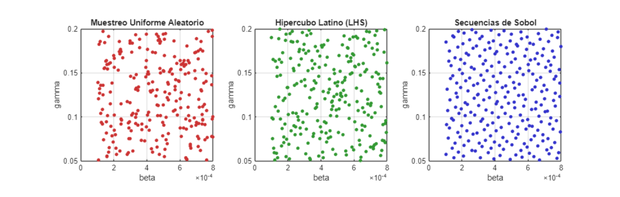
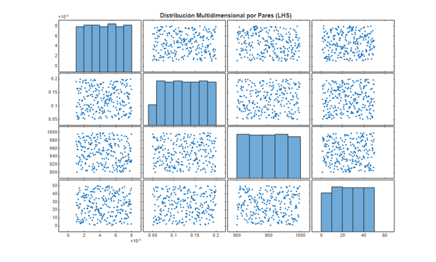
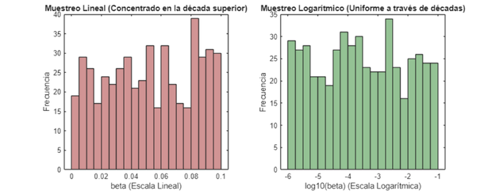

Contents
- 1. Configuración del Entorno
- 2. Definición del Modelo Epidémico SIR
- 3. Generación de Matrices de Diseño (N = 250 muestras)
- 4. Comparación de la Cobertura del Espacio (Proyección beta vs gamma)
- 5. Análisis del Llenado de Espacio y Proyecciones Multidimensionales
- 6. Ilustración del Muestreo en Escala Logarítmica
- 7. PREGUNTAS DE ANÁLISIS Y EJERCICIOS DOCENTES
% DEMO_02_MUESTREO Muestreo del Espacio de Parámetros % Curso guiado de GSUA-CSB % % Este script explora y compara las diferentes estrategias de diseño de experimentos % computacionales (Design of Experiments - DoE) para el muestreo de hipercubos: % 1. Muestreo Aleatorio Uniforme ('Uniform') % 2. Muestreo por Hipercubo Latino ('LatinHypercube' / LHS) % 3. Muestreo por Secuencias de Sobol ('Sobol')
1. Configuración del Entorno
clc; clear; close all; % --- Localización portable de la toolbox GSUA-CSB (ver Módulo 01) ----------- if isempty(which('gsua_dataprep')) candidatos = { fullfile(fileparts(mfilename('fullpath')), '..', '..', '..', 'Functions') % dentro del repo clonado fullfile(getenv('USERPROFILE'), 'MATLAB Drive', 'Toolbox', 'Functions') fullfile(getenv('USERPROFILE'), 'Documents', 'MATLAB', 'GSUA-CSB', 'Functions') }; for k = 1:numel(candidatos) if isfolder(candidatos{k}), addpath(candidatos{k}); break; end end if isempty(which('gsua_dataprep')) error(['No se encontró la toolbox GSUA-CSB en el path de MATLAB. ' ... 'Instala GSUA-CSB.mltbx o añade su carpeta Functions con addpath(...).']); end end % El modelo SIR se reutiliza del Módulo 01. Resolvemos su carpeta de forma % relativa a este script (../../01_Introduccion_Modelos/matlab), no con una % ruta absoluta, para que funcione en cualquier equipo donde se clone el curso. model1_path = fullfile(fileparts(mfilename('fullpath')), '..', '..', ... '01_Introduccion_Modelos', 'matlab'); if isfolder(model1_path) addpath(model1_path); else error('No se encontró la carpeta del Módulo 01 en: %s', model1_path); end fprintf('=========================================================================\n'); fprintf(' MÓDULO 02: MUESTREO DEL ESPACIO DE PARÁMETROS (DESIGN OF EXPERIMENTS) \n'); fprintf('=========================================================================\n\n');
========================================================================= MÓDULO 02: MUESTREO DEL ESPACIO DE PARÁMETROS (DESIGN OF EXPERIMENTS) =========================================================================
2. Definición del Modelo Epidémico SIR
Rango de variación para 4 factores: [beta, gamma, S0, I0]
ranges_sir = [
0.0001, 0.0008; % beta (tasa de transmisión)
0.05, 0.20; % gamma (tasa de recuperación)
900, 999; % S0 (Susceptibles iniciales)
1, 50 % I0 (Infectados iniciales)
];
[T_sir, ~] = gsua_dataprep('sir_continuous_userdefined', ranges_sir, ...
'domain', [0, 80], ...
'names', {'beta', 'gamma', 'S0', 'I0'}, ...
'out_names', {'Susceptibles', 'Infectados', 'Recuperados'});
disp('Tabla de Factores del Modelo SIR:');
disp(T_sir);
Setting environment to work with user-defined function
Tabla de Factores del Modelo SIR:
Range Nominal
________________ _______
beta 0.0001 0.0008 0.00045
gamma 0.05 0.2 0.125
S0 900 999 949.5
I0 1 50 25.5
3. Generación de Matrices de Diseño (N = 250 muestras)
N_samples = 250; % A. Muestreo Aleatorio Uniforme M_uni = gsua_dmatrix(T_sir, N_samples, 'Method', 'Uniform'); % B. Hipercubo Latino (LHS) M_lhs = gsua_dmatrix(T_sir, N_samples, 'Method', 'LatinHypercube'); % C. Secuencia de Baja Discrepancia de Sobol M_sobol = gsua_dmatrix(T_sir, N_samples, 'Method', 'Sobol');
4. Comparación de la Cobertura del Espacio (Proyección beta vs gamma)
figure('Name', 'Comparación de Métodos de Muestreo (2D)', 'Position', [100 100 1100 350]); subplot(1, 3, 1); plot(M_uni(:,1), M_uni(:,2), 'o', 'Color', [0.8 0.2 0.2], 'MarkerFaceColor', [0.8 0.2 0.2], 'MarkerSize', 4); xlabel('beta'); ylabel('gamma'); title('Muestreo Uniforme Aleatorio'); grid on; axis square; subplot(1, 3, 2); plot(M_lhs(:,1), M_lhs(:,2), 'o', 'Color', [0.2 0.6 0.2], 'MarkerFaceColor', [0.2 0.6 0.2], 'MarkerSize', 4); xlabel('beta'); ylabel('gamma'); title('Hipercubo Latino (LHS)'); grid on; axis square; subplot(1, 3, 3); plot(M_sobol(:,1), M_sobol(:,2), 'o', 'Color', [0.2 0.2 0.8], 'MarkerFaceColor', [0.2 0.2 0.8], 'MarkerSize', 4); xlabel('beta'); ylabel('gamma'); title('Secuencias de Sobol'); grid on; axis square;

5. Análisis del Llenado de Espacio y Proyecciones Multidimensionales
Matriz de dispersión (Pairplot) para Hipercubo Latino
figure('Name', 'Matriz de Dispersión DoE (Latin Hypercube)'); plotmatrix(M_lhs); title('Distribución Multidimensional por Pares (LHS)');

6. Ilustración del Muestreo en Escala Logarítmica
fprintf('\n--- Demostración de Escala Logarítmica ---\n'); fprintf('Para parámetros que varían en órdenes de magnitud (ej. 1e-6 a 1e-1):\n'); % Rango de 5 órdenes de magnitud para beta_log beta_min = 1e-6; beta_max = 1e-1; n_log = 500; % Muestreo Lineal (Uniforme en escala directa) samples_lin = beta_min + (beta_max - beta_min) * rand(n_log, 1); % Muestreo Logarítmico (Uniforme en log10) samples_log = 10.^( log10(beta_min) + (log10(beta_max) - log10(beta_min)) * rand(n_log, 1) ); figure('Name', 'Muestreo Lineal vs Logarítmico', 'Position', [150 150 900 350]); subplot(1, 2, 1); histogram(samples_lin, 20, 'FaceColor', [0.7 0.3 0.3]); xlabel('beta (Escala Lineal)'); ylabel('Frecuencia'); title('Muestreo Lineal (Concentrado en la década superior)'); subplot(1, 2, 2); histogram(log10(samples_log), 20, 'FaceColor', [0.3 0.6 0.3]); xlabel('log10(beta) (Escala Logarítmica)'); ylabel('Frecuencia'); title('Muestreo Logarítmico (Uniforme a través de décadas)');
--- Demostración de Escala Logarítmica --- Para parámetros que varían en órdenes de magnitud (ej. 1e-6 a 1e-1):

7. PREGUNTAS DE ANÁLISIS Y EJERCICIOS DOCENTES
fprintf('\n=========================================================================\n'); fprintf(' PREGUNTAS DE ANÁLISIS Y EJERCICIOS DOCENTES (MÓDULO 02) \n'); fprintf('=========================================================================\n'); fprintf('1. Al observar la proyección 2D (beta vs gamma), ¿cuál método muestra mayores huecos o aglomeraciones?\n'); fprintf('2. ¿Por qué el Hipercubo Latino garantiza que no haya dos muestras en el mismo intervalo unidimensional?\n'); fprintf('3. Si un parámetro varía entre 1e-5 y 100, ¿qué ocurre si usamos muestreo lineal vs logarítmico?\n'); fprintf('=========================================================================\n\n');
========================================================================= PREGUNTAS DE ANÁLISIS Y EJERCICIOS DOCENTES (MÓDULO 02) ========================================================================= 1. Al observar la proyección 2D (beta vs gamma), ¿cuál método muestra mayores huecos o aglomeraciones? 2. ¿Por qué el Hipercubo Latino garantiza que no haya dos muestras en el mismo intervalo unidimensional? 3. Si un parámetro varía entre 1e-5 y 100, ¿qué ocurre si usamos muestreo lineal vs logarítmico? =========================================================================